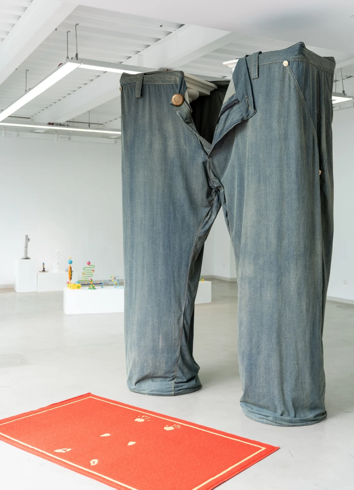
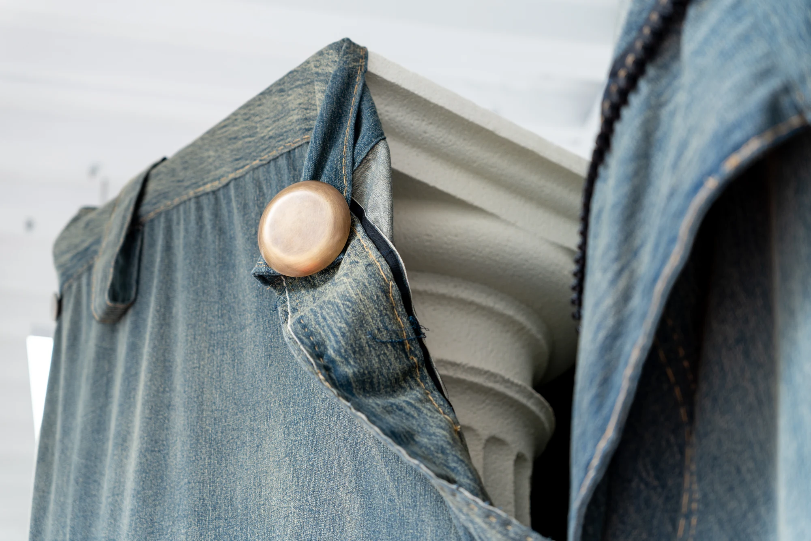
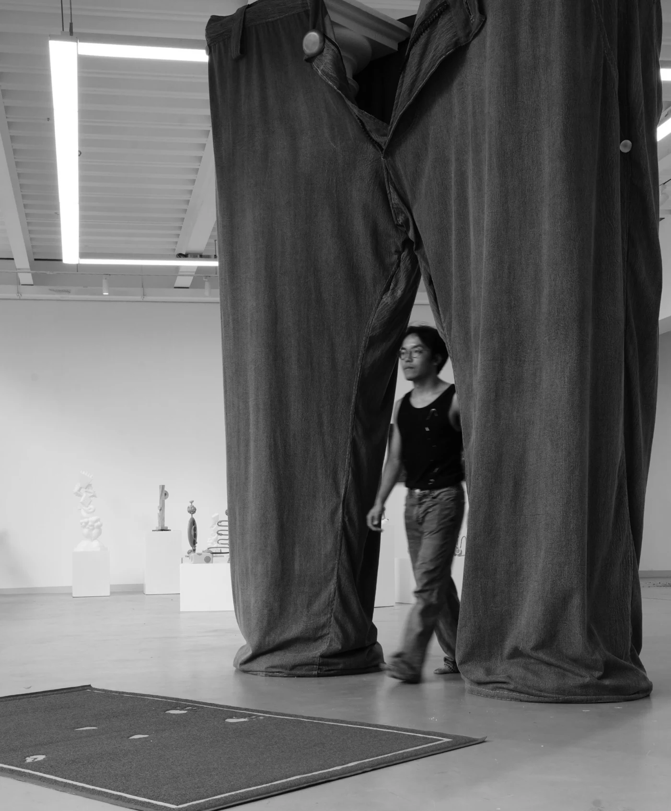
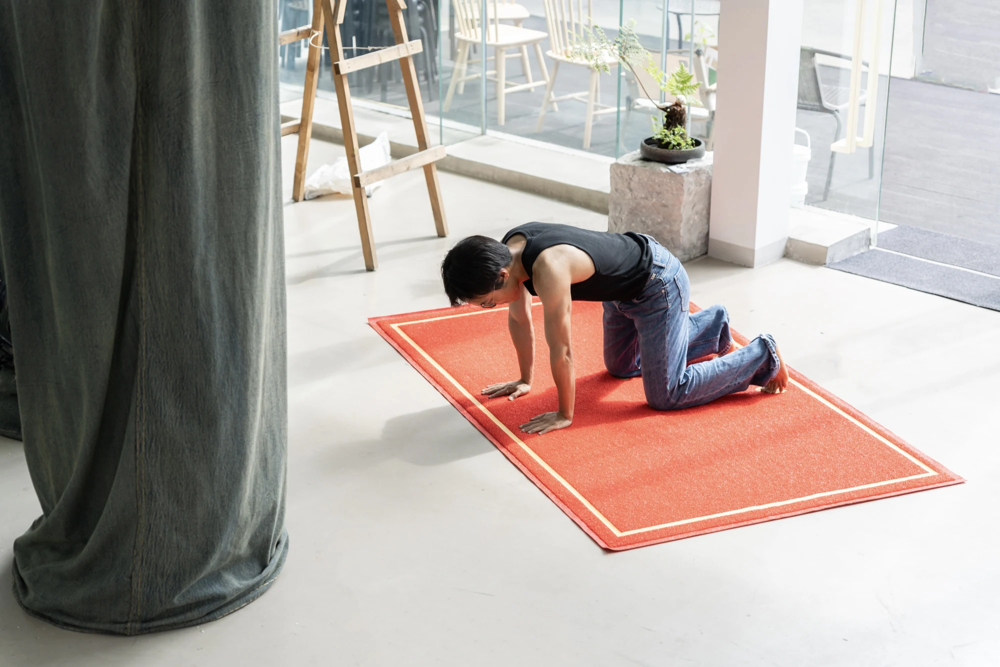
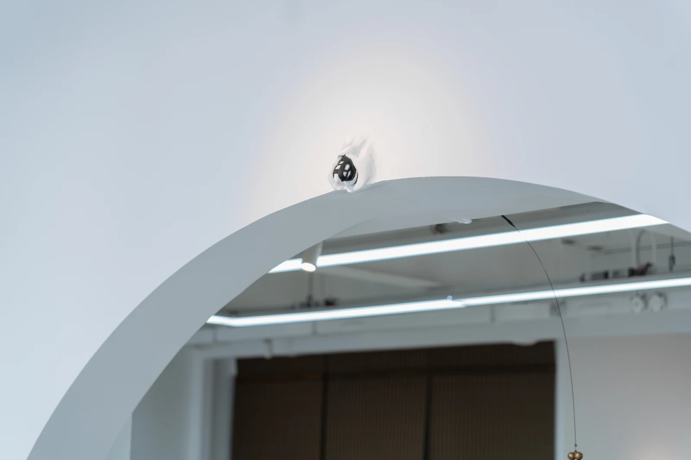
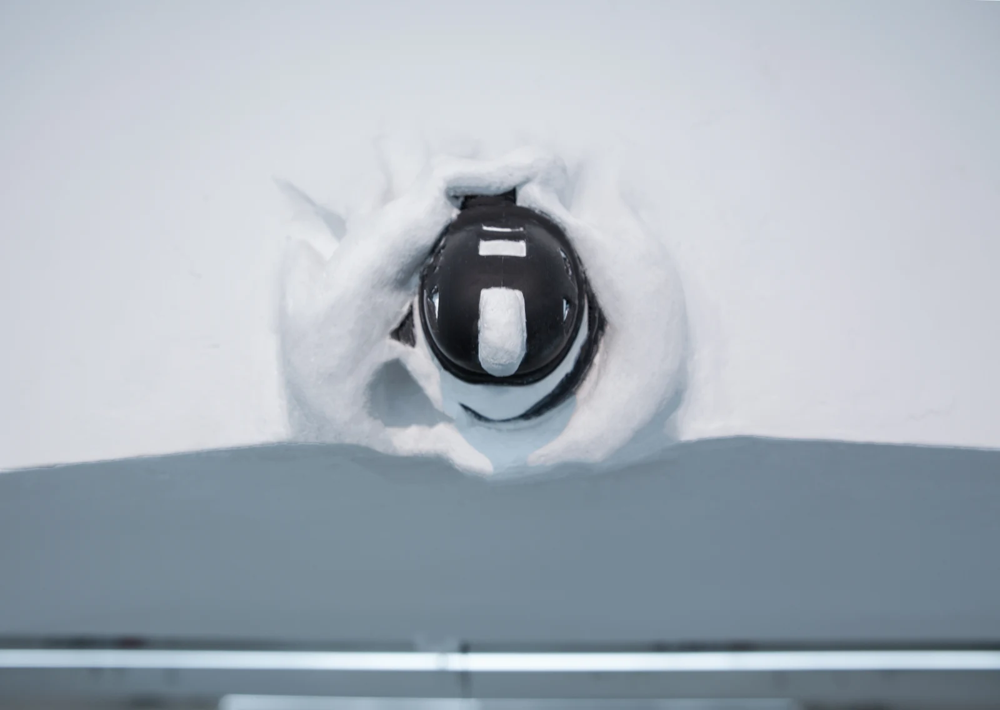
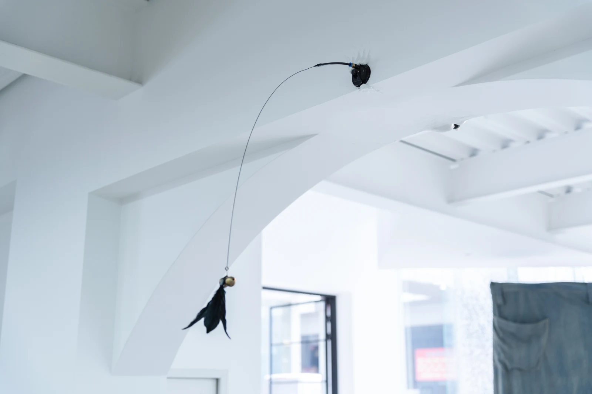

Project file / architectural intervention
02
Arch / Column
Architectural symbols of authority are transformed into bodily thresholds, using columns, denim, and entry gestures to question power, masculinity, and passage.







01-05
Threshold sequence
-
01
Overview
Arch / Column uses architectural elements as social and bodily signs. Two Doric columns are separated and fitted with oversized denim, forming a passable human-scale arch. A red entry mat carrying kneeling hand and foot impressions is placed before the structure. Additional hardware such as locks and bells extends the language of access, control, and threshold.
-
02
Column and body
The Doric column is treated as a bodily and social sign. Its architectural authority is brought down to the scale of passage and encounter.
-
03
Denim arch
Oversized denim connects the separated columns into a passable arch. Clothing turns the architectural frame into a body-related threshold.
-
04
Entry mat
The red entry mat carries kneeling hand and foot impressions. Entry is framed as a gesture of posture, access, and submission.
-
05
Locks, bells, and threshold
Locks and bells extend the installation into systems of control and announcement. The passage becomes both invitation and restriction.